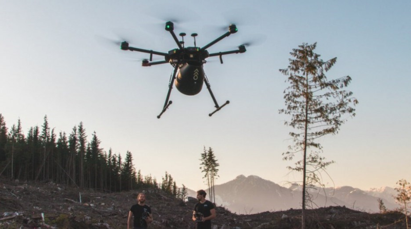
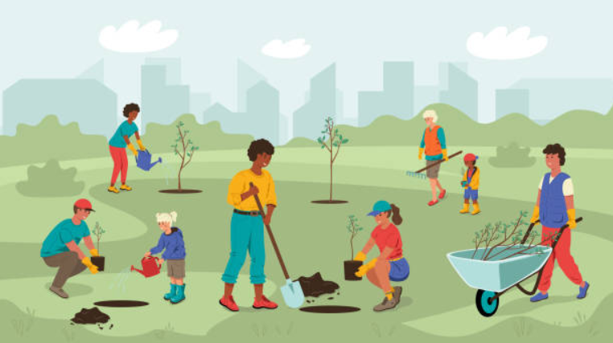

<!DOCTYPE html>
<html lang="en">
<head>
    <meta charset="UTF-8">
    <title>Efforts for SDG 15</title>
    <link rel="stylesheet" href="style.css">
</head>
<body>

<header>
    <h1>Global & Local Efforts for SDG 15</h1>
    <p>How the world is responding to the biodiversity and forest crisis.</p>
</header>

<nav>
    <a href="index.html">Home</a>
    <a href="efforts.html">Global Efforts</a>
    <a href="miyawaki.html">Miyawaki Forests</a>
    <a href="shopping.html">Shopping</a>
    <a href="fundraiser.html">Fundraiser</a>
</nav>

<main>
    <section>
        <h2>International Actions</h2>
        
        <p>
            Countries worldwide are adopting stronger forest protection laws and launching reforestation missions.
            <strong>UN initiatives such as REDD+</strong> reward nations for reducing deforestation, while
            the <strong>Paris Agreement</strong> encourages expansion of forest cover to absorb carbon and restore ecosystem integrity.
        </p>
    </section>

    <section>
        <h2>Technological Interventions</h2>
        
        <p>
            Technology is revolutionizing conservation efforts. Drones help detect illegal logging, satellite imagery tracks biodiversity,
            and AI predicts ecosystem threats. Smart irrigation systems, soil restoration technologies, and data-driven monitoring tools
            are accelerating global forest recovery efforts.
        </p>
    </section>

    <section>
        <h2>Local & Community Initiatives</h2>
        
        <p>
            NGOs, students, and community groups are driving positive change through plantation drives, river cleanups,
            and sustainability awareness workshops. Indigenous communitieswho safeguard nearly <strong>one-third of the worlds forests</strong>
            are gaining recognition and support for their sustainable land management practices.
        </p>
    </section>
</main>

<footer>
    <h3>Made by Karan, Jash, Ridham, Vivan</h3>
</footer>

</body>
</html>

